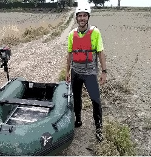

Apasionado de la geomatica y topografia con mas de 9 años de experiencia profesional.
Ubicado en Huelva desde 2015 donde desarrollo labores de consultor de operaciones geomaticas.
Mi principal desepeño es la adquisicion de datos, procesado y generación de entregables de alta calidad relacionados con la cartografia digital.
Además estoy complementado mi perfil GIS con la formación Master GIS online 2021 impartida por ESRI.
